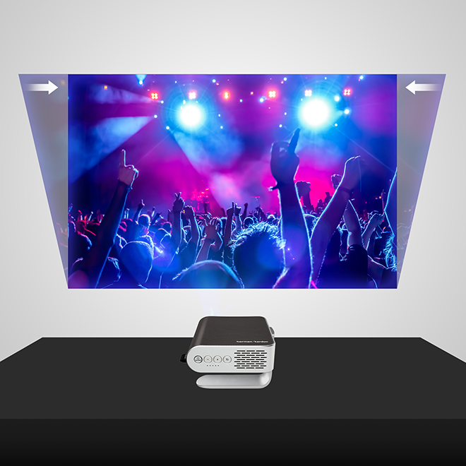

جهاز عرض صغير
In Tech Pro. Diploma: LCD Projector

In Tech Pro. Diploma
instructional technology professional diploma
الصفحات
الصفحة الرئيسيةالخميس، 15 ديسمبر 2011
LCD Projector
جامعة حلوان كلية التربية قسم تكنولوجيا تعليم دبلومة مهنية
LCD projector "العرض بأستخدام شاشة الكريستال السائل" اسماء المجموعة 1- شيماء مصطفي كمال. 2- رباب عبد الناصر. 3- وسام رمضان فتحي . 4 - ياسمين شحاتة إسماعيل مقدم إلى د / إيمان
الفهرس التعريف بالجهاز. مسميات الجهاز. أنواع الجهاز و تطوراتة امكانية استخدام الجهاز في مجال التعليم والتدريب. فكرة عمل الجهاز "مسار الأشعة" تشغيل الجهاز مكونات الجهاز بعض الأعطال التي تحدث و صيانتها.
أولآ التعريف بالجهاز:
كان السبب الرئيسي لظهور الجهاز هو الأستفادة من امكانيات الكمبيوتر و الفيديو في أعداد عروض جماعية بدلآ من اقتصارها علي العروض الفردية أو العروض لمجموعات صغيرة. كانت اول بداية لظهور فكرةعرض بيانات الكمبيوتر علي شاشة كبيرة و امام عدد كبير من المشاهدين عن طريق وحدة عرض بيانات الكمبيوتر.علي الرغم من أمكانيات العرض المتعددة إلا انة كان يعتبر للتعليم و التدريس الفردي. أما شاشة الكريستال السائل عبارة عن شاشة زجاجية تعمل بنظرية الكريستال السائل .لذلك يعد المسمي العلمي الدقيق لها"لوحة العرض بواسطة الكريستال السائل" LCD PANEL "
ثانيا: مسميات الجهاز:
لجهاز العرض بالشاشة البلورية العديد من المسميات بعضها يرتبط ا- بوظيفة الجهاز،ب- نوع المادة المعروضة،ج- مسميات ترتبط بالشركات النتجة. فالجهاز الذي يعرض صورة الفيديوفقط أطلق علية عدة مسميات: Liquid crystal video display عرض الفيديو بأستخدام الكريستالات السائلة. Video beam.
العرض الضوئي للفيديو. Video system projector . نظام عرض الفيديو.
Video projector .جهاز عرض الفيديو
الجهاز الذي يعرض من الكمبيوتر فقط: Data projector. جهاز عرض البيانات. الجهاز الذي يعرض من الكمبيوتر و الفيديو معا يسمي . Data video projector جهاز عرض الفيديو و البيانات Multimedia projector. جهاز عرض الوسائط المتعددة LCD projector . العرض بأستخدام شاشة الكريستال السائل
ووحدة عرض البيانات بأستخدام السبورة الضوئية يطلق عليها: Computer data display unit. وحدة عرض بيانات الكمبيوتر. Data show. وحدة عرض البيانات LCD panel. العرض بأستخدام شاشة الكريستال السائل
و المسمي الأخير هو الأدق والأفضل من الناحية العلمية حيث تشير الي نوع التقنية المستخدمة في العرض.أما المسمي الاكثر شيوعا هو العرض بالشاشة البلورية.
ثالثا:مميزات "سعة" أستخدام الجهاز في مجال التعليم و التدريب:
1- قدم لنا الجهاز أضافة حيث جعل من الفيديو و الكمبيوتر اداة للتعليم الجماعي بعد أن كانت ادوات تختص بالتعليم الفردي والمجموعات الصغيرة.اصبح يمكن الأستفادة من هذة الأجهزة في التعليم الجماعي. 2- تشترك الشاشة البللورية مع جهازكاميرا تصوير سطح المكتب في منظومة عرض عمل تقوم بعمل كل أجهزة العروض الضوئية المعروفة حيث تعرض هذة المنظومة كل المواد التعليمية الثابتةالمتحركة،الصامتة و الناطقة، السالبة والموجبة،المعتمة و الشفافة،المجسمة والمسطحة.
مميزات هذة المنظومة: ا -لا تحتاج لأعتام غرفة العرض . ب-لا تحتاج الي تحضيرات العروض الكثيرة . ج - بالأضافة الي المميزات السابق ذكرها. 3-يمكن العرض من أكثر من مصدر في نفس الوقت من نفس النوع أو من عينات أخري فهو يعرض من الفيديو و السوبر فيديو ،الكاميرات التناظرية،بالأضافة الي الكمبيوتر.كما إنة العرض من أكثر من مصدر
عن طريق الشاشة المقسمة والشاشة المنقسمة. 4-العمر الأفتراضي للمصباح في بعض الأجهزة تصل الي خمسة آلاف ساعة وذلك يجعل من عملية استخدام الجهاز عملية أقتصادية.
رابعآ انواع الجهاز و تطوراتة أ-تطورات ترتبط بنظام العرض. ب-تطورات ترتبط بنوع المادة المعروضة. ج-تطورات ترتبط بنوع الجهاز. 1 -نظام العرض الخلفي: هو أول الأنظمة التي ظهرت بعدسة مستقلة و إضاءة مستقلة بالأضافة الي شاشة مدمجة.وقد صمم هذا النظام للحصول علي أعلي مستويفي عروض الفيديو و الكمبيوتر.ولكن عيوب هذا العرض ان الأجهزة ثقيلة الوزن ،ثابتة لا يمكن تحريكها،اقتصارها علي شاشة مدمجة محدودة المساحة لذلك لا تناسب العروض الجماعية الكبيرة كأستخدمها في مدرج كبير أو مؤتمر علمي.
2- نظام العرض ذو العدسات الثلاث: ظهر في هذا النظام أجهزة أقل في الحجم و الوزن ،و فكرة عمل الجهاز تعتمد علي وجود ثلاث عدسات
للإسقاط الأولي باللون الأحمر،والثانية باللون الأخضر والثالثة باللون الأزرق.حيث يوجد خلف هذة العدسات منشور أو أكثر يقوم بتحليل الضوء الي مكوناتة الثلاث الرئيسية ،ثم يسقط من خلال العدسات الثلاثة علي شاشة عرض خارجية كبيرة.
3-نظام العرض ذو العدسة الواحدة : حيث تم أختصار العدسات الثلاث السابقة الي عدسة واحدة.
ب-تطورات ترتبط بنوع المادة المعروضة:
1-جهاز يعرض من الفيديو : هو جهاز مصمم وفق تكنولوجيا الشاشة البللوريةو يعرض صورة الفيديو عن طريق تعرف إشاراتة الألكترونية " الفيديو و السوبرفيديو "أو من الكاميرا التناظرية والرقمية 2 - جهاز يعرض من الكمبيوتر فقط: حيث يتعرف هذا الجهاز أوتوماتيكيآ علي إشارة الكمبيوتر علي إختلاف أنواعها. 3-جهاز يعرض من الكمبيوتر و الفيديو: هو يعتبر أحد التقنيات البصرية في تكنولوجيا الكريستال السائل و هو يستقبل إشارة كل من الفيديو و الكمبيوتر. ج-تتطورات تربط بتطورات الجهاز: شهدت أجهزة "الشاشة البللورية" العديد من التطورات السريعة بهدف زيادة كفاءة الجهاز في تصميم مواقف التعليم الجماعي وكانت من أهم هذة التطورات : 1 -زيادة قوة المصباح.حيث يعتمد الجهاز علي مصباح قوي من نوع البخار المعدني"ميتال هاليد" حيث انة يعمل في ضوء الحجرة العادي وقد وصلت قدرة المصابيح الي.28000 وتعني شدة نصوع الصورة . 2 -بعض الأجهزة زودت بأمكانية الجمع بين أكثر من مصدر في ذات الوقت خلال أستخدام خاصية الشاشة داخل الشاشة ،أو الشاشة المنقسمة. 3 -بعض الأجهزة الحديثة مزودة بأمكانية عرض كارت الكمبيوترمن خلال مشغل خاص بها داخل الجهاز نفسة دون الحاجة الي CPU 4-بعض الأجهزة الحديثة وزنها لا يتعدي 1,5 كجم وذلك يمكن نقلها بسهولة مع جهاز المبيوتر المحمول لإعداد العرض في أي مكان بسهولة و يسر
تقوم فكرة الجهاز على تحويل صورة الكمبيوتر أو الفيديو من إشارة إلكترونية الى صورة ضوئية بعد معالجتها ثم تكبيرها وعرضها على شاشة خارجية وتتلخص فكرة عمل الجهاز فى وجود مرشحات مزدوجة لتعكس لون الضوء الخاص بها وتسمح بمرور الالوان الاخرى من الضوء فمثلا المرشح الاول يعكس اللون الاخضر ويسمح بمرور اللونين الاحمر والازرق ثم المرشح الموجود أعلى الجهاز خاص أيضا باللون الاخضر ثم يمر الشعاع الاخضر على لوحة الكريستال السائل لتحويل الضوء العادى الى بلورات سائلة ومن الجدير بالذكر أن البلورات السائلة غير ملونة لذلك فهى تأخد لون الشعاع الداخل إليها ويتخذ نفس مسار كلا من اللون الاخضر واللون الازرق وتسير الالوان الثلاثة متوازية حيث أن تطابقها يعنى تحويلها مرة أخرى الى اللون الابيض وإن كانت تلتقى فى بعض النقاط لتكون لون جديد موجود بالصورة المعروضة
- الواجهة الأمامية العلوية :
1 - نافذة التهوية : يخرج منها الهواء الساخن باستمرار لحماية لمبة الجهاز من التلف
2- مستقبل الأِشعة تحت الحمراء : يستقبل الإشارات من الريموت كنترول
- العدسة المحدبة : تسقط البقعة الضوئية منها على لوحة العرض .
4 - مخرج الصوت : يخرج منه الصوت المرفق بالعرض .
- لوحة التحكم : 5 لوحة للبرمجة وظيفتها موزعة على أزرارها المستخدمة لتشغيل وإطفاء الجهاز وضبط حجم ووضوح البقعة الضوئية إلى جانب وظائف أخرى هامة
Menu يتم ضبط الوظائف المختلفة للجهاز بواسطة مفتاح menu الموجود فى لوحة التحكم أو من خلال من خلال ذات المفتاح فى جهاز التحكم من بعد ( ريموت كنترول ) حيث تضم مجموعة الإختيارات و الأوامر التالية :
picter focus zoom Option timer audio Position Lens fetract
ولكل اختيار من هذه الإختيارات وظيفة أو مجموعة من الوظائف ، يتم التنقل بينها عن طريق الأسهم الرأسية ▲▼ ، والتحكم فى درجة كل وظيفة و مستواها عن طريق الأسهم الأفقية ►◄الموجودة على لوحة التحكم وفى جهاز التحكم عن بعد .
قائمة picture وهذه القائمة خاصة بمواصفات الصورة مثل النصوع و التباين و درجة اللون
Bright التحكم فى درجة النصوع Contrast التحكم فى درجة التباين N balance R التحكم فى درجة اللون الأحمر N balance G التحكم فى درجة اللون الأخضر N balance B التحكم فى درجة اللون الأزرق
قائمة focus ولها وظيفة واحدة هى التحكم فى درجة وضوح الصورة .
قائمة zoom ولها وظيفة واحدة هى التحكم فى مساحة الصورة المعروضة ( التصغير والتكبير)
قائمة option وهى تتضمن الوظائف التالية:
Language اختيار لغة التفاعل و عادة تكون اللغات المتاحة هى ( الإنجليزية الفرنسية - الأسبانية) Mute setting لأختيار العرض صامت أو مصاحب بصوت Set up الإختيار بين العرض الخلفى و الأمامى Lamp run time لمعرفة عمر المصباح Renst power الإختيار بين التحكم بالريموت كنترول أو لوحة التحكم Power save للتحكم فى شدة التيار
Input Disp للتحكم فى نوع الصورة أبيض / أسود سالبة ألوان موجبة
قائمة timer تستخدم لتحديد مدة معينة يتوقف بعدها الجهاز تلقائياً .
قائمة Audio ولها خيارات خاصة بالصوت Balance خاص للإختيار بين السماعات Volume للتحكم فى شدة الصوت
قائمة position خاصة بالتحكم فى موضع الصورة على الشاشة . H- post أفقياً V- post رأسياً V Blk - R إلى اليمين V Blk - L إلى اليسار V Blk - + لأعلى V Blk - B لأسفل
قائمة lens fetract هو أمر خاص بالعدسة الإضافية الموجودة داخل الجهاز
6 - حلقة التركيز : نحرك العدسة يمنة ويسرة لضبط وضوح البقعة الضوئية الساقطة على لوحة العرض
الخلفية :
- مداخل و مخارج التوصيل : و هي منافذ لتوصيل جهاز LCD Projector بالأجهزة الأخرى و يرفق مع الجهاز كابلات منفصلة للتوصيل
- وحدة التحكم عن بعد : الريموت كنترول .
3- الواجهة السفلية :
- أرجل الجهاز : يساهم رفع وخفض أرجل الجهاز في الحصول على موقع أفضل للبقعة الضوئية الساقطة على لوحة العرض
- المقبض : يستخدم لحمل الجهاز ونقله من مكان لآخر.
3- مكان تغيير اللمبة عند التلف
- فلتر الهواء : يحمي الجهاز من الغبار والأجسام الغريبة المحتمل دخولها مع هواء التهوية البارد الداخل للجهاز.
3 - نقاط التثبيت في السقف : نقاط تستخدم لتثبيت الجهاز في السقف
الخطوات : 1 - انزع غطاء العدسة . 2- صل الجهاز بوصلة الكهرباء .
3- ضع الوصلة في إبريز الكهرباء . لاحظ : مؤشر التشغيل سيضيء باللون البرتقالي .
4 - شغل الوسيط أو الوسائط المتصلة بالجهاز 5- اضغط على مفتاح التشغيل .
لاحظ : سيصدر الجهاز صوتا وسيومض مؤشر التشغيل باللون الأخضر
16 - انتظر حتى يثبت مؤشر التشغيل
يمكن وصله بأجهزة الحاسوب الشخصية والمحمولة - 1
2 - يمكن وصله بجهاز الفيديو وجهاز الفيديو التفاعلي وصله بجهاز استقبال القنوات الفضائية 3 - يمكن 4- يمكن وصله بجهاز العارض البصري . وصله بكاميرات التصوير الثابتة والمتحركة يمكن 5 6 - الصورة والبيانات بشكل مكبر إلى شاشة العرض ينقل
7 - يستخدم في تدريس المجموعات الكبيرة
المعلم من عرض الوسائط المتعد دة 8 - يمكن التوصيل اللاسلك ى
هذه التقنيه متاحه في بعض الانواع الحديثه من هذه الاجهزه، حيث يمكن إستخدام الجهاز في أي مكان دون أن يمنع ذلك أي عائق
¡ حماية المعلومات
ايضا تتيح أنواع حديثه إمكانيه حمايه البيانات المسجله على جهاز عرض البيانات من النسخ أو الإلتقاط أو غير ذلك من وسائل سرقه المعلومات
¡ إمكانية تقديم العروض بدون الاعتماد على جهاز الكومبيوتر
¡ التحكم الشبكي
مما يساعد المتخصصين على تقديم العروض إما في المكاتب أو أثناء الحرك احتياطات عامه . - يحظر النظر لمصباح الداتا شو لتجنب إصابة العين بأضرار لان المصباح إضاءته شديدة جداً .
2 - وضع الجهاز على سطح مستقر تمام
3 - إبعاد الجهاز عن المياه
4 - إبعاد الجهاز عن أجهزة التدفئة
5 - عدم تعريض الجهاز لضوء الشمس
6 - عدم وضع أشياء ثقيلة على الجهاز .
7 - عدم تشغيل الجهاز في مكان به غبار و أتربة
8 - عدم وضع أي شي بجوار فتحات التهوية حتى لا تعيق تبريد المصباح نياً: احتياطات الكهرباء ثا - استخدام الأسلاك المرفقة مع الجهاز فقط أو البديل ذو الجودة العالية 1 2 - عدم وضع أي شي على سلك كهرباء الجهاز .
3 - وضع الأسلاك بحيث لا تكون بعيدة عن مسار الأقدام ويتم ربطها في الطاولة لزيادة تامين الجهاز من السقوط .
4 - إزالة البطاريات من الريموت كنترول في حالة التخزين أو عدم استخدامه لفترة طويلة .
5 - كإجراء وقائي يفضل توصيل أي أجهزة كالفيديو أو الكمبيوتر أو كاميرا الفيديو وجهاز الداتا شو مغلق
ثالثا : استبدل المصباح - فك المصباح قد يكون به خطورة في حالة عدم إتباع خطوات الاستبدال الصحيحة 1 : .- 2 - يجب فصل سلك الكهرباء قبل عملية الاستبدا
3 - ترك المصباح لمدة ساعة حتى يبرد رابعا: تنظيف الجهاز من الأتربة 1 - لتجنب الإصابة بحروق يجب عدم تنظيف الجهاز قبل 30 دقيقة من إغلاقه حتى يبرد .
2 - استخدام قطعة من القماش الناعم الذي لا يترك وبر ولا تستخدم سوائل تنظيف الزجاج .
3 - لا تسمحي بدخول ماء إلى الجهاز .
4 - في حالة وصول ماء لداخل الجهاز يجب تركه قبل الاستخدام لفترة حتى نضمن جفاف الماء تماماً .
نة 5 - في حالة دخول كمية كبيرة من الماء لداخل الجهاز يتم الاتصال بمختص الصيا خامساً : تنظيف العدسة : - يتم وضع السائل الخاص بتنظيف العدسة على قطعة قماش نظيفة ناعمة ولا يوضع السائل على العدسة مباشرة .
2 - يتم التنظيف في شكل دائري وفى اتجاه واحد وبشكل خفيف .
3 - لا تستخدمي منظفات أو مذيبات دهون في عملية التنظيف .
4 - لتجنب تغير الألوان أو بهتان الصورة احذري من دخول سائل التنظيف لداخل جسم الجهاز سادساً: تنظيف جسم جهاز الداتا شو من الخارج 1 - يتم إزالة الأتربة من على الجسم الخارجي للجهاز بقطعة قماش جافة وناعمة .
2 - بللي قطعة قماش بالماء الدافئ وصابون معتدل (مثل المستخدم فى تنظيف الأطباق) ثم قومي بتنظيف جسم الجهاز .
3 - قومي بشطف قطعة القماش جيدا من المنظفات التي بها ثم كقومي بمسح الجهاز مرة أخرى حتى يتم شطف الجهاز بشكل جيد وإزالة أي اثر للمنظفات
.
4 - لا تقومي بمسح الجهاز بسوائل تحتوى على كحول حتى لا يتغير لون جسم الجهاز الخارجي . إحتياطات أثناء التشغيل 1 - في حالة تكرار عملية التشغيل لاي سبب، ينبغي الا تقوم بعملية تشغيل متكرره
2 - يجب عدم ترك الجهاز يعمل فترات طويله دون إستخدامه فعلياً
3 - تأكد من أن مرحة تبريد الجهاز تعمل بشكل مستمر وبكفاءه
4 - قبل خروجك من المركز في نهاية الدوام تأكد من إغلاق المفتاح الرئيسي لمصدر الكهرباء في المركز
5 - نظف فلتر الجهاز بشكل مستمر
6 - بعد الانتهاء من إستخدام الجهاز قم بتغيطة عدسة العرض
7 - إغلق متاح مصدر التيار الكهربي الرئيسي تأكد من أن جميع الكوابل موصلة بالشكل الصحيح يجب أن يتم التوصيل قبل التشغيل 8 9 - تأكد من نزع غطاء العدسة قبل استخدام الجهاز
10 - لتجنب خطر الحريق من شدة الإضاءة الناتجة من عدسة الجهاز لا تضع أي شيء أمامها أو بالقرب منها
لا تعيق التهوية حول الجهاز بوضع أشياء بجانب فتحات التهوية 11- لا تستخدم الجهاز في ظروف حارة أو ذات رطوبة عالية جدا أو معرضة للغبار الكثيف
12 -
13 - لا تستخدم الجهاز بالقرب من أي جهاز ينتج عنه مجالات مغناطيسية
لا تعرض الجهاز للمطر أو الرطوبة 14 - 15 - لا تفتح الجهاز بهدف الصيانة مطلقا ( مصباحه يحتوي على الزئبق السام وقد ينفجر عند اللمس .. اترك ذلك للمختصين .
16 - لا تضع الجهاز أثناء التشغيل على سطح مغطى بمادة قابلة للاشتعال قماش ، بلاستيك .
17 . لا تضع الجهاز على سطح غير ثابت قابل للاهتزاز
18 لا تفصل الجهاز من مصدر الطاقة إلا بعد توقف المروحة الخاصة بالتبريد عن العمل
بعد دقيقتين من إيقاف التشغيل على الأقل وذلك حتى لا يتلف المصباح وقطع الجهاز .
19- 19 . افصل كابل التغذية من المصدر الكهربي في حالة عدم استخدام الجهاز لفترة طويلة
حتى لا يبقى الجهاز في وضع standby لفترة طويلة 20 - تأكد من أن عدسة الزووم وقطعة البلاستيك الخاصة بضبط المستوى قد وضعت في مكانها بالكامل وذلك قبل وضع الجهاز في حقيبته
لا تكلف أحدا غيرك بنقل الجهاز من مكان لآخر 21
الأعطال التي تصيب الجهاز و صيانتها الحلول المقترحة بعض المشكلات 1-قد يكون غطاء الجهاز مغلق فنقوم برفع الغطاء. أو نقوم بتنشتط الي AC ونحاول إعادة تشغيل المحولات المسئولة عن الصورة. و في النهاية تحريك فيشة التوصيل حتي الحصول علي الصورة. 1- إذا لم تظهر الصورة
ضبط البعد البؤري عن طريق الحلقة الخاصة بة.
نتأكد من سلامة وحدات الفيديو جميعآ و وضع أزرار التحكم علي خط أفقي. نفس الحل السابق إذا كان موصل بسلك نحاول التأكد من توصيل الجاك الخاص بة في الجهاز اما إذا كان لاسلكي نتأكد من سلامة جهاز التحكم نفسة و المصباح الخاص بة أو البطاريات التي تشغلة.
2-الصورة غير نقية او واضحة
3-تظهر الصورة لكن بدون الوان. 4-ظهور الصورة لكن مقلوبة أو معكوسة يمينآ أو يسارآ 5-جهاز التحكم الخارجي لا يعمل.
مرسلة بواسطة Yasmina Raouf في 6:26 م إرسال بالبريد الإلكتروني كتابة مدونة حول هذه المشاركة المشاركة في Twitter المشاركة في Facebook المشاركة على Pinterest المكان: المنيب، الجيزة، مصر
ليست هناك تعليقات:
إرسال تعليق
رسالة أحدث رسالة أقدم الصفحة الرئيسية الاشتراك في: تعليقات الرسالة (Atom)
معانا علطول
زوار المدونة
تابعنا واكتب إيميلك
سيرش عندنا
Facebook Account
Yasmin Abd El RaoufCreate Your Badge
الأرشيف
▼ 2011 (10) ▼ ديسمبر (8) Smart Board P.C computer LCD projector LCD Projector Visualizer جهاز كاميرا تصوير سطح المكتبDesktop Video Camera ا... جهاز عرض الشرائح الشفافة ◄ نوفمبر (2)تابع معانا ( مواقع و مدونات مفيدة )
مختبر الدكتوراه Phd-Lab -قائمة المدونات الإلكترونية
In Tech Pro. Diploma Smart Board - السبورة الذكية قبل 8 أعوام المظهر: نافذة الصورة. يتم التشغيل بواسطة Blogger .Posted by Jack  Read more
Read more  Comments (15)
Comments (15)  2020.11.18 01:27
2020.11.18 01:27